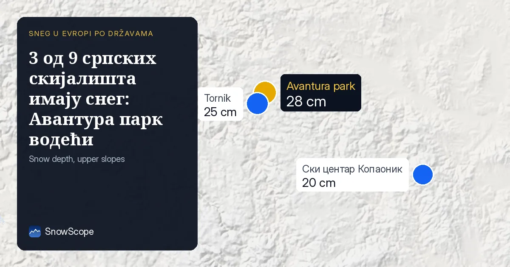

3 од 9 српских скијалишта имају снег: Авантура парк водећи
Три од девет српских скијалишта имају мерљиву снежну покривку на својим станицама од 16. новембра. Авантура парк води са 28 cm дубине, праћена од Торника са 25 cm и Ски центра Копаоник са 20 cm.
Pogledajte prognozu snega za Avantura park u aplikaciji SnowScopeVisina snega, upozorenja i 3D karta, besplatno.
Само три скијалишта пријављују снег
Ове недеље само три од девет српских скијалишта показују мерљиву снежну покривку на својим горњим падинама. Мерења од 16. новембра долазе од Авантура парка, Торника и Ски центра Копаоник—ниједно друго место у нашој мрежи нема снега. Овај уски фокус показује где смо у сезони.
Вода складиштена у српским планинама током новембра је минимална и веома локализована. Ако желите да скијате на снегу уместо голе стене, ваша одредишта су ограничена на та три. Ово је типично за средину новембра на Балкану, али показује важну истину о планинској хидрологији: зима не долази равномерно. Снег пада у мрљама, затим се неки топи, затим пада више. Тренутно смо у фази топљења након малог пада снега.
| Ski-centar | Visina snega | Novi sneg, 72 h | Naredni dani | Vrh |
|---|---|---|---|---|
| Avantura park | 28 cm | 2 cm | 0 cm | 1.485 m |
| Tornik | 25 cm | 2 cm | 0 cm | 1.486 m |
| Ски центар Копаоник | 20 cm | 2 cm | 0 cm | 1.975 m |

Авантура парк водећи у рангирању по дубини
Авантура парк води са 28 центиметара на 1485 метара надморске висине. Торник га прати блиско на 1486 метара са 25 центиметара—само 3 центиметра иза и на готово истој висини. Ски центар Копаоник заузима треће место са 20 центиметара, али се налази највише на 1975 метара, што му даје потенцијалну предност за останак хладан док температуре варирају.
Сва три су добила око 2 центиметра новог снега у 72 сата пре мерења. Ово нам говори да је мали временски систем прошао, али је био краћ и слаб. Станична мерења су прецизна на једној тачки, па услови варирају широм скијачког терена сваког скијалишта: кланце и северне падине имају више снега, док сунчане падине имају мање. Ако вам дубина сада битна, изаберите Авантура парк. Ако вредите висину и хладнији снег, изаберите Ски центар Копаоник.
Планински пасови показују скоро никакву општу покривку
Наш модел снега дели Србију на три високинска појаса од 500 до 2000 метара. Сваки показује 0 центиметара просечне дубине и 0 процената покривке. Ово потврђује да су та три скијалишта изузетне тачке у другачије голом крајолику. Раније у сезони, снег стиже у разбарушене мрље вођене локалном топографијом уместо равномерног покривања целих зона.
Три скијалишта изнад 1485 метара су хватила снег где нижи терен није. Широм нашег моделованог подручја од 21.100 квадратних километара, само 70 квадратних километара имају снег—ретка дистрибуција засада. Планине зависе од овог снега да хране реке и резервоаре кроз пролеће и лето, али тренутно је резервар воде скоро празан.
Значајан снег очекиван од 21. новембра
Нема новог снега предвиђено за следећа три дана. Образац се побољшава од 2026-11-21, када стиже прва значајна снежна покривка. До 2026-11-23, предвиђено је шест центиметара, са могућношћу до осам центиметара до краја следеће недеље.
Ово су скромне укупне количине, али ће помоћи да се обнови складиште планинске воде. Ако скијате пре 2026-11-21, очекујте танку покривку са видљивим камењем. Ако чините до те датуме, услови се постепено побољшавају. Прелаз ће бити постепен, а не нагао.
Снежна покривка скупљена за 20 квадратних километара у недељи
Снежна покривка се стално скупља. Пре седам дана, 90 квадратних километара је било беле боје. Данас, 70 квадратних километара остаје покривено снегом—губитак од 20 квадратних километара у једној недељи. Јучер је самом нестало 10 квадратних километара.
Овај силазни тренд је управо оно што хидролог снега очекује у средини новембра: температуре расту, неки снег се топи брже него што свежи снег може да га замени, и биланс воде се клања ка топљењу. Вода складиштена у планинама опада. Ово ће наставити док 2026-11-21, када системи предвиђања стигну. После те датуме, тренд би требало да се окрене са новим снегом који додаје планинским резервама воде и хладним ноћима која га закључава на месту.
Три скијалишта за скијање сада, боље опције од 21. новембра
Ваше скијачке опције сада су ограничене на та три скијалишта горе. Авантура парк и Торник, оба близу 1485 метара, нуде најпоузданију снежну дубину. Ски центар Копаоник на 1975 метара обезбеђује додатну висину и хладније окружење где је снег стабилнији.
Раносезонски снег је крхак и може скривати камење под својим танким слојем. Пре него што кренете на неуредни терен, проверите званични билтен о лавинама Србије. Танак снег може бити нестабилан ако је база слаба. Та три скијалишта су ваше тренутне најбоље опције за скијање на континуиранском снегу. Чекање до после 2026-11-21 дат ће вам значајно боље услове.
Saveti za skijaše
- Скијајте Авантура парк за најбољу дубину сада: 28 cm је 3 cm више од Торника и 8 cm више од Ски центра Копаоник.
- Одаберите Ски центар Копаоник на 1975 метара ако вам висина битна: његова висина даје хладније температуре и дуже очување снега.
- Чините до 2026-11-21 за значајно боље услове; предвиђања показују до 6 cm новог снега који стиже онда.
- Проверите званични билтен о лавинама пре него што одете ван писте; танак раносезонски снег може бити нестабилан на слабим основама.
- Сва три скијалишта пријављују дубине између 20–28 cm: инспектујте видљивост терена пре скијања, нарочито на јужним падинама где снег може бити још танђи.
About these numbers
Resort snow depths are the deepest snow on the resort's upper slopes from the SnowScope snow model (about 1 km, run of 16. novembra); they are estimates for an area, not a measurement at one point. Station values are measurements on the date shown. Forecasts can change. Always read the official avalanche bulletin before going off-piste.
Cite this report
For research, teaching or the press: the numbers and charts are free to reuse under CC BY 4.0 with this citation.
SnowScope (2026), 3 од 9 српских скијалишта имају снег: Авантура парк водећи, https://snowscope.app/blog/sr/2026/11/serbia-snow-report-16-november-2026.html, accessed 2026-11-16
SnowScope (Atlas Labs). (2026, November 16). 3 од 9 српских скијалишта имају снег: Авантура парк водећи. SnowScope snow reports. https://snowscope.app/blog/sr/2026/11/serbia-snow-report-16-november-2026.html
BibTeX
@misc{snowscope2026serbiasnowreport16novemb,
author = {{SnowScope (Atlas Labs)}},
title = {3 од 9 српских скијалишта имају снег: Авантура парк водећи},
year = {2026},
month = nov,
howpublished = {\url{https://snowscope.app/blog/sr/2026/11/serbia-snow-report-16-november-2026.html}},
note = {Published 2026-11-16 20:42 UTC; accessed 2026-11-16}
}· CC BY 4.0 · Methods, data and tools →
Avantura park: snow and temperature by height, this winter vs last (tools) →
Follow Avantura park
Besplatno: poruka kada dolazi novi sneg i prognoza svako jutro.